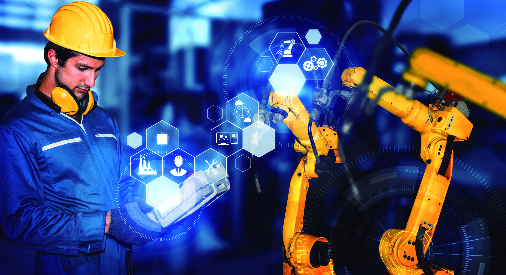

Duas palavras, dois mundos, uma confusão recorrente
Um diretor de operações de uma empresa industrial portuguesa com 120 colaboradores decide, num trimestre, investir em "digitalização". Contrata uma plataforma de gestão de armazém, instala sensores nas linhas de produção e migra os registos de qualidade para um sistema cloud. Seis meses depois, os relatórios são gerados automaticamente, os stocks estão visíveis em tempo real e o papel desapareceu de três departamentos. O investimento parece ter corrido bem.
Outro diretor, numa empresa do mesmo setor e dimensão semelhante, faz o oposto. Compra robots colaborativos para a paletização, implementa um chatbot para responder a clientes e automatiza o envio de faturas. Também diz aos acionistas que "digitalizou a empresa".
Nenhum dos dois está errado. Mas fizeram coisas fundamentalmente diferentes. E a incapacidade de distinguir o que cada um fez é, provavelmente, a raiz de muitas decisões tecnológicas mal orientadas em PME portuguesas.
O que é digitalização, sem abstração
Digitalização é a conversão de informação, processos ou interações do formato analógico para o formato digital. Não é uma transformação operacional. É, antes de tudo, uma mudança de suporte. Onde antes existia um formulário em papel, passa a existir um formulário digital. Onde havia um arquivo físico, passa a haver uma base de dados. Onde um relatório era impresso e circulava por correio interno, passa a ser gerado num dashboard acessível a quem precisa.
A digitalização não elimina tarefas. Muda a forma como a informação é capturada, armazenada e distribuída. Uma empresa pode digitalizar completamente os seus processos e continuar a precisar do mesmo número de pessoas para os operar, porque a lógica do processo permanece intacta. O que muda é o meio.
Há um exemplo que torna isto claro. Um restaurante que passa a aceitar reservas por uma app em vez de por telefone digitalizou o processo de reserva. Os dados ficam registados, o cliente recebe uma confirmação instantânea, o responsável de sala vê as reservas num ecrã. Mas alguém continua a validar a reserva, a distribuir as mesas, a confirmar com a cozinha. O processo é digital. A execução continua a ser humana.
O que é automação, na prática
Automação é a transferência de tarefas de execução humana para execução por máquinas, software ou algoritmos. A tarefa pode ser simples (enviar um email de confirmação quando um pagamento é recebido) ou complexa (um modelo de machine learning que classifica faturas por tipo e as encaminha para os centros de custo corretos). Em ambos os casos, o que define a automação é a remoção da intervenção humana num passo específico.
A automação pode acontecer com ou sem digitalização prévia. Uma linha de montagem com robots industriais está automatizada, mas pode não estar digitalizada se os dados de produção não são recolhidos nem analisados centralmente. Uma fábrica pode ter robots a funcionar desde os anos 80 e continuar a gerir as encomendas em papel. Acontece mais do que se imagina.
O inverso também é real. Uma empresa pode ter todos os processos em formato digital, com dashboards sofisticados e dados em tempo real, e continuar a exigir intervenção humana em cada passo. Digitalização total, automação zero.
Onde divergem, concretamente
| Dimensão | Digitalização | Automação |
|---|---|---|
| O que muda | O suporte da informação | Quem executa a tarefa |
| Objetivo primário | Acessibilidade, rastreabilidade, velocidade de acesso | Redução de erro, velocidade de execução, escalabilidade |
| Impacto nos RH | Requalificação (novas ferramentas) | Redistribuição (novas funções) |
| Investimento típico | Software, cloud, formação | RPA, robots, IA, integração de sistemas |
| Risco principal | Digitalizar processos ineficientes | Automatizar processos que ninguém compreende |
| Pré-requisito | Nenhum (pode ser o primeiro passo) | Dados estruturados (frequentemente requer digitalização prévia) |
O risco principal de cada abordagem merece atenção. Digitalizar um processo que já era ineficiente em papel resulta num processo ineficiente em formato digital, mais rápido a produzir os mesmos erros. Automatizar um processo que ninguém compreende de ponta a ponta resulta numa caixa negra operacional que funciona até deixar de funcionar, e nesse momento ninguém sabe intervir.
A sequência lógica que a maioria ignora
Na teoria, a sequência é simples: primeiro digitalizar, depois automatizar. A digitalização cria os dados. A automação usa-os. Sem dados estruturados, não há automação fiável. Uma empresa que tenta automatizar o processamento de encomendas sem ter as encomendas em formato digital vai investir meses em integrações manuais, workarounds e exceções que destroem o retorno do investimento.
Na prática, a sequência não é tão linear. Algumas empresas automatizam primeiro processos isolados (a faturação, por exemplo) e só depois digitalizam o resto. Funciona, desde que o processo automatizado não dependa de inputs que ainda estão em papel ou em sistemas desconectados. O problema é que, na maioria dos casos, depende.
Um inquérito da McKinsey de 2023 a 1.200 empresas industriais europeias revelou que 68% das que classificaram os seus projetos de automação como "abaixo das expectativas" tinham lacunas significativas na digitalização dos processos a montante. Os dados não estavam lá, ou estavam em formatos incompatíveis, ou chegavam com atraso. A automação estava tecnicamente correta. Faltava-lhe o combustível.
Onde estão as empresas portuguesas neste espectro
O tecido empresarial português é dominado por PME, muitas delas com menos de 50 colaboradores. O DESI (Digital Economy and Society Index) da Comissão Europeia colocou Portugal na 15.ª posição entre os 27 estados-membros em 2024 no pilar de integração de tecnologias digitais pelas empresas. A posição não é desastrosa, mas esconde uma distribuição muito desigual.
Estes números contam uma história. A maioria das empresas portuguesas está ainda na fase de digitalização básica: passou para a cloud, usa ERP, tem presença online. A automação real, aquela que elimina passos manuais em processos core, está concentrada em empresas maiores ou em setores onde a pressão competitiva é mais forte, como o retalho alimentar, a logística e a indústria automóvel.
Há também um efeito geracional. Empresas fundadas depois de 2015 tendem a nascer já digitais e a introduzir automação cedo, porque os custos de ferramentas como Zapier, Make ou n8n caíram drasticamente. Empresas com 20 ou 30 anos de operação carregam legado, não só tecnológico mas também cultural. A resistência não está no software. Está nas pessoas que aprenderam a trabalhar de uma forma e não veem razão para mudar.
Cinco cenários para ilustrar a fronteira
Os conceitos tornam-se mais úteis quando aplicados a situações concretas. Estes cinco cenários cobrem realidades comuns em empresas portuguesas de média dimensão.
1. Gestão de recursos humanos
Uma empresa com 80 colaboradores substitui os registos de férias em Excel por um portal onde os funcionários submetem pedidos e os gestores aprovam com um clique. Isto é digitalização: a informação mudou de suporte, o fluxo de decisão manteve-se. Se, um ano depois, a empresa configura regras automáticas que aprovam férias quando não há sobreposição com colegas do mesmo departamento e o saldo é suficiente, passa a haver automação. A decisão deixou de ser humana em 70% dos casos.
2. Contabilidade e faturação
A migração de faturação manual para um software certificado é digitalização. A configuração de regras que geram faturas automaticamente quando uma encomenda muda de estado no ERP, enviam-nas por email ao cliente e registam o lançamento contabilístico sem intervenção do contabilista é automação. A diferença entre as duas pode ser de 15 a 20 horas de trabalho manual por semana numa empresa com volume moderado de transações.
3. Marketing e comunicação
Criar uma newsletter num Mailchimp em vez de enviar emails individuais é digitalização. Configurar sequências que enviam emails diferentes consoante o comportamento do destinatário (abriu, clicou, comprou, abandonou o carrinho) é automação. O primeiro caso poupa tempo na distribuição. O segundo poupa tempo na decisão e na personalização.
4. Controlo de qualidade industrial
Substituir fichas de inspeção em papel por tablets com formulários digitais na linha de produção é digitalização. Instalar câmaras com visão computacional que detetam defeitos a 99,2% de precisão e rejeitam peças automaticamente é automação. O custo de entrada é diferente, o impacto operacional também.
5. Atendimento ao cliente
Ter um sistema de tickets onde os pedidos dos clientes ficam registados e atribuídos a agentes é digitalização. Ter um chatbot que resolve 40% das questões sem intervenção humana e encaminha o resto com contexto pré-classificado é automação. A maioria das empresas portuguesas de serviços está no primeiro caso e acredita estar no segundo porque tem um chat no website. Ter chat não é automatizar. É digitalizar o canal.
Quando investir em cada um
Não há uma resposta universal. Depende da maturidade da empresa, do setor, da margem disponível para investimento e da urgência competitiva. Mas há padrões reconhecíveis.
Se a empresa ainda opera com informação fragmentada (um Excel aqui, um email ali, uma pasta de rede acolá), o investimento prioritário é digitalização. Centralizar, estruturar e tornar a informação acessível. Não faz sentido automatizar processos cuja informação de base é inconsistente.
Se a empresa já tem dados estruturados e processos estáveis mas repete tarefas manuais de alto volume e baixa variabilidade (processar faturas, classificar leads, gerar relatórios periódicos), o investimento prioritário é automação. A empresa já tem os carris. Falta pôr o comboio a andar.
Se a empresa tem ambição de escalar sem aumentar proporcionalmente o headcount, precisa de investir nas duas coisas em paralelo, com prioridade dada à digitalização dos processos que alimentam as automações pretendidas. A sequência importa.
Os erros mais frequentes
O primeiro erro, e o mais caro, é comprar tecnologia antes de compreender o processo. Uma empresa que instala um RPA (Robotic Process Automation) para automatizar a introdução de dados no ERP sem primeiro mapear as exceções e variações do processo vai passar meses a corrigir bugs que não são bugs. São exceções legítimas que ninguém documentou porque "toda a gente aqui sabe como funciona". Até a máquina tentar fazer o mesmo e descobrir que não sabe.
O segundo é confundir fornecedores de tecnologia com consultores de processo. Um fornecedor de software vende licenças. Quer que a empresa use o máximo de funcionalidades possível, porque isso justifica o valor do contrato. A decisão sobre o que digitalizar e o que automatizar não pode ser delegada a quem tem interesse comercial na resposta.
O terceiro é subestimar a gestão da mudança. A digitalização muda ferramentas. A automação muda funções. Ambas exigem que as pessoas aprendam coisas novas, e a automação exige algo mais difícil: que aceitem que parte do seu trabalho anterior já não existe. Sem comunicação transparente e formação adequada, o projeto mais bem desenhado tecnicamente pode falhar por resistência interna.
Que apoios existem para cada caminho
Portugal tem, neste momento, vários instrumentos que financiam tanto digitalização como automação, embora nem sempre com a mesma etiqueta.
O Portugal 2030, através do COMPETE 2030, financia projetos de "transição digital" que abrangem desde a implementação de ERP e plataformas de comércio eletrónico (digitalização pura) até à introdução de robots, IA e sistemas ciber-físicos (automação). As taxas de cofinanciamento variam entre 35% e 75% dependendo da dimensão da empresa e da região.
O PRR (Plano de Recuperação e Resiliência) teve componentes específicas para a transição digital das empresas, com vouchers para PME que cobriam consultoria, implementação de ferramentas digitais e formação. Embora muitos avisos já tenham encerrado, novas fases continuam a ser anunciadas.
Para automação mais avançada com componente de I&D (uso de IA, visão computacional, algoritmos proprietários), o SIFIDE II permite deduzir fiscalmente entre 32,5% e 82,5% das despesas elegíveis, incluindo pessoal técnico afeto ao projeto e aquisição de equipamento exclusivamente dedicado a atividades de investigação e desenvolvimento.
O ponto-chave: a forma como o projeto é apresentado determina o instrumento disponível. Um projeto de automação pode ser enquadrado como inovação de processo (PT2030), como I&D (SIFIDE), ou como investimento produtivo (RFAI), dependendo da sua natureza concreta. A escolha do enquadramento não é neutra. Tem implicações no valor do apoio e nas obrigações de reporte.
Como aplicar este conhecimento
A distinção entre automação e digitalização não é académica. Tem consequências diretas no orçamento, no tipo de fornecedor que se contrata, no perfil de pessoas que se precisa e no tipo de apoio financeiro a que se pode aceder.
Se está a planear investimentos tecnológicos para os próximos 12 a 24 meses, comece por um exercício simples: para cada processo que quer melhorar, pergunte se o problema é de suporte (a informação existe mas está em formato errado ou inacessível) ou de execução (a tarefa é repetitiva, previsível e não deveria exigir intervenção humana). A resposta orienta o investimento.
Não tente fazer tudo ao mesmo tempo. Escolha dois ou três processos com impacto mensurável, digitalize os que precisam de digitalização, automatize os que já têm dados fiáveis. Meça o resultado. Repita. A sofisticação vem com a maturidade, não com a ambição inicial.
Se a decisão envolve candidaturas a fundos europeus ou incentivos fiscais, o enquadramento do projeto importa tanto quanto o projeto em si. Não é incomum que um investimento de 200.000 euros tenha um cofinanciamento de 45% num enquadramento e de 75% noutro, simplesmente porque a candidatura foi estruturada de forma diferente. Isto não é um detalhe. É dinheiro.
Comentários, correções ou contrapontos são bem-vindos: geral@opencapital.pt